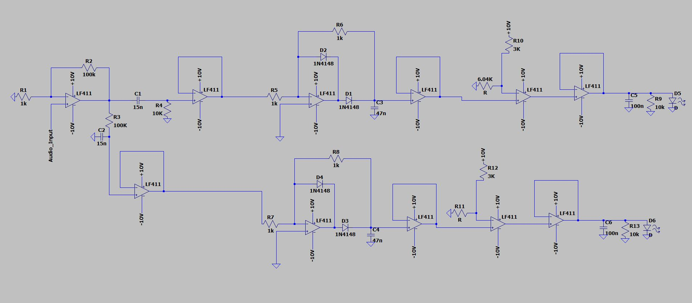
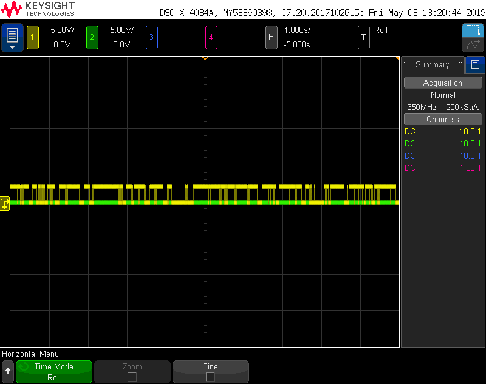

Circuit Design:
- Isolate respectively the bass and melody of an audio input into two amplified signals
- Indicate when a peak in each signal is present
- Must be able to filter input into signals with discrete peaks presenting at a frequency of 10 Hz or less to ensure peaks are visible to human eyes when passed through LEDs
- Smooth peaks with capacitors such that LEDs fade out after a pulse occurs rather than turning off immediately
- Rapid signal filtering to ensure that there is no latency between audio input and the generated LED pulses
Task:
Parameters:
Circuit Diagram:
- Amplify signal with inverting amplifier by 101x to make it easier to perform operations on signal
- Split signal into two
- Send one branch of signal through low-pass filter with corner frequency of 106 Hz, because bass of audio is 60-100 Hz
- Send other branch of signal through high-pass filter with corner frequency of 1061 Hz, because mid-range is 500-2,000 Hz
- Buffer each signal and send each through precision peak detector with 47 nF smoothing capacitor to produce discrete, rectified peaks at lower frequency than input signal
- Buffer each signal and send each into an op-amp comparator with switching threshold of 6.68V to ensure that signal switches rarely enough to be visible to the human eye when passed through LEDs
- Buffer each effectively digital signal produced by comparator and send each into a green and yellow LED respectively to indicate when a beat is detected
- Place 100nF smoothing capacitor and 10K resistor in parallel with each LED to smooth the drop off after each peak that passes through each LED
- Initially forgot to place buffers between each section of the circuit, thereby rendering the entire circuit dysfunctional
-
Initially passed each filtered signal through precision peak rectifier rather than precision peak detector.
- Realized rectified signal had peaks that were so frequent that LED appeared on perpetually
- So added smoothing cap to consolidate high-frequency peaks
-
Initially passed rectified and smoothed signals through Schmitt Trigger instead of standard comaprator, thinking the output digital signal would be cleaner
- Forgot that Schmitt Trigger has positive and negative thresholds making it impossible to continuously switch with a rectified signal because negative threshold will never be passed
- Reverted to standard comparator with only one positive switching threshold
Solution:
Missteps:
Output Signal passed through LED from low-pass filtered signal with beats detected

Output Signal passed through LED from high-pass filtered signal with beats detected
Demo with green LED following bass and yellow LED following melody